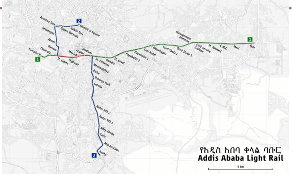

Research Methodology

The methodological framework was rooted in a mixed-methods design, integrating both quantitative and qualitative approaches to ensure a robust, multi-dimensional understanding of the transport dynamics along the Tor-Hailoch–Ayat corridor.
Mixed-Methods Approach and Rationale
The use of a mixed-methods approach allowed the study to capture both objective performance metrics and subjective commuter experiences. The quantitative component focused on operational indicators such as speed, frequency, capacity, and cost. These metrics were crucial in evaluating the efficiency of LRT and projecting the potential performance of BRT using comparative models. On the other hand, the qualitative component explored commuter satisfaction, comfort levels, and preferences through open-ended survey responses. This dual-layered methodology ensured that the research did not rely solely on numerical performance but also considered the human dimension of transport serviceability.

Why Use a Mixed-Methods Approach
- Combines data and insights: Merges numbers (usage, delays) with passenger opinions for a complete understanding.
- Explains preferences: Reveals why people favor modes like BRT for speed and comfort.
- Validates findings: Cross-checks data with feedback (e.g., complaints support delay reports).
- Links facts with experiences: Shows how service issues affect user satisfaction and choices.
Study Area and Scope
This study focuses on Addis Ababa, Ethiopia, one of Africa’s fastest-growing cities, which faces challenges in meeting high public transportation demand due to limited services. The research centers on the Tor-Hailoch-Ayat corridor, part of the existing East-West Light Rail Transit (LRT) network.
This corridor is vital to Addis Ababa’s transit system and ideal for evaluating the LRT’s performance. Since 2015, the LRT has faced challenges like slow speeds, congestion, irregular service, and overloading. Due to high traffic flow, improving public transport here is essential.
The study also examines the potential for implementing BRT along this corridor to see if it can provide a better or complementary solution. The aim is to offer practical recommendations to improve transit access and reliability in the city.
Data Collection Techniques
The primary data collection relied on a digital survey tool, Kobo Toolbox, strategically deployed at multiple LRT stations. This approach ensured that commuter responses reflected the actual day-to-day experiences of users within the targeted corridor. Data included travel habits, service expectations, and detailed feedback on LRT weaknesses and BRT potential. In addition to surveys, secondary data was collected from official sources such as the Addis Ababa Light Rail Transit office and the City Public Transport Administration. These included ridership figures, speed data, ticketing statistics, and financial reports.
This combination of primary and secondary data allowed for data triangulation—validating findings through multiple sources—which greatly strengthened the credibility of the results.

The data collection process is structured to gather information relevant to all specific objectives, from analyzing current LRT performance to comparing it with BRT feasibility.

Simulation Using SUMO
SUMO is an open-source traffic simulation tool that models individual vehicle behavior, including private and public transport, pedestrians, and traffic signals. It helps analyze transportation systems realistically.
One of the most innovative components of this methodology was the use of Simulation of Urban Mobility (SUMO) software. By digitally modeling real-world traffic and transit scenarios, SUMO allowed the research team to visualize and analyze how a conceptual BRT system would perform on the same infrastructure as the LRT. Simulations tested different operational speeds, bus frequencies, and station loads to calculate metrics such as travel time, waiting time, and passenger throughput.
The SUMO simulations offered predictive insights that would be impossible to obtain solely through field data collection. These simulations demonstrated how BRT could reduce congestion, enhance average speed, and meet higher passenger volumes more efficiently than the current LRT system. The visual and numerical outputs from SUMO added technical rigor and actionable foresight to the research conclusions.
Purpose
- Compare current LRT and proposed BRT in Addis Ababa.
- Test policies before implementation.
- Predict traffic, travel time, and congestion.
Inputs:
- User surveys (via Kobo Toolbox)
- Maps, ticket data, traffic reports
- OpenStreetMap data converted to SUMO network
Simulation Process:
- Install SUMO and tools (NETEDIT, Python).
- Download and convert the Addis Ababa OSM map.
- Edit the network to focus on relevant roads using NETEDIT.
- Define routes and schedules for LRT and BRT.
- Run simulations and analyze outputs like travel time, congestion, delays.
- Use results to compare current LRT with proposed BRT.
Study Area Relevance
Focusing on the Tor-Hailoch to Ayat corridor gave the study geographical precision and practical relevance. This corridor represents one of Addis Ababa's busiest east–west transit axes and includes multiple LRT stations experiencing significant commuter traffic. By concentrating on this strategic route, the research was able to evaluate current challenges and test hypothetical BRT implementation within a real and high-demand environment. This route suffers a lot due to less access to public transport, frequent junction along the route and long waiting time of LRT and crowd inside the trains.Tor-Hailoch to Ayat corridor
Sampling and Data Analysis
Survey sampling was conducted at various points across the corridor, ensuring representation across socio-economic and demographic groups. While the study was limited by time and resource constraints, sampling diversity was maintained to achieve a reliable picture of public sentiment. The analysis of qualitative responses involved thematic coding, while quantitative metrics were processed using statistical and comparative methods. Performance parameters such as average travel speed (LRT: 18 km/h, BRT projected: 22–28 km/h) and frequency were highlighted to inform the comparative analysis.
Scenario Building and Analysis
The scenario begins by assessing the traffic conditions of Addis Ababa’s Light Rail Transit (LRT). Based on the findings, a Bus Rapid Transit (BRT) system is designed as an alternative using existing roads and LRT tracks. The BRT includes dedicated lanes, frequent service, and platform-level boarding. Different design assumptions, such as bus speed, travel time, and dwelling time, are tested to address LRT challenges and improve performance. The system is evaluated using SUMO simulation software.
Final Reflection
The chosen methodology, combining field data, official statistics, user perceptions, and transport modeling, provided a holistic and reliable foundation for the conclusions drawn in this research. It enabled the study to go beyond surface-level observation and explore not only what the transport problems are, but also why they persist and how they could be resolved. By placing SUMO simulations alongside real-world commuter sentiment, the methodology ensured that the proposed shift toward BRT is not just theoretically justified but also practically validated.
In sum, the research methodology adopted in this thesis is well-aligned with the goals of modern, evidence-based urban mobility planning. It ensures that the recommendations made are rooted in data, supported by simulation, and responsive to commuter needs.